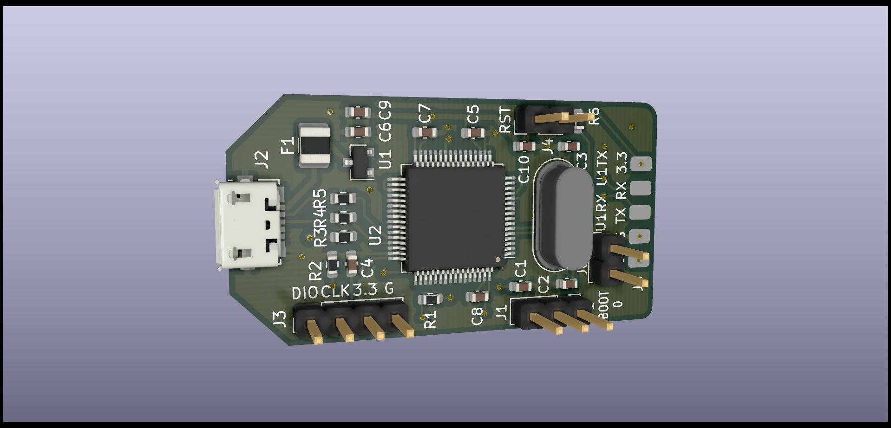
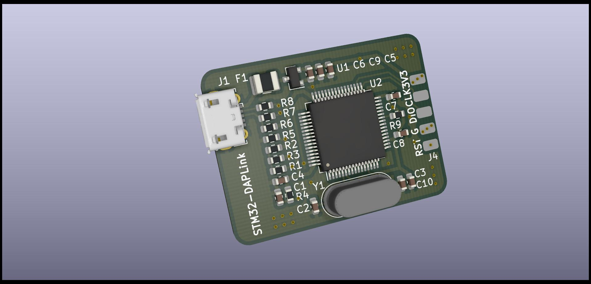

DAPLink¶
DAPLink是一个开源软件项目，可以对ARM Cortex CPU进行编程和调试。在Linux操作系统中可以使用pyOCD和OpenOCD来对目标微控制器进行编程和调试。
序¶
最近在写一些小demo的时候发现没有调试器可以用，于是考虑使用其他板卡板载的DAPLink进行转接，遗憾的是因为没有合适的转接线材无法使用。因为之前有看过DAPLink的相关源码，而且目前恰好有几片STM32F103R8T6微控制器，因此考虑自己制作一个调试器来使用，查看DAPLink源码后发现现有的hic里已经包含了stm32f103xb的支持了，考虑到网上各种调试器使用的都是STM32F103C8T6，所以STM32F103R8T6应该也问题不大。
随后编译了相关bl和if固件并将其烧录到一块STM32F103ZET6的开发板中进行了简单验证，是可以正常工作的，于是便正式开始DAPLink的制作。
PCB设计¶
由于目前的工作机只安装了Linux操作系统，因此PCB设计部分使用了KiCad，KiCad是一款开源的电子EDA工具，设计这种小规模的电路还是绰绰有余的。
原理图部分主要参考了DAPLink源码中source/hic_hal/stm32/stm32f103xb/gpio.c中各引脚的定义以及STM32-DAPLink - Share project -PCBWay项目的附件原理图，此外删除了一些不是很必要的部分，例如USB上拉电阻使能以及电源指示灯等。
由于电路简单，PCB拉线也比较随意，画完之后便很快发出去了，几天之后拿到PCB焊接元器件进行了初步验证，使用pyOCD可以正常连接目标微控制器并进行程序烧录。
但是这个过程中也发现了一些之前绘制PCB时遗漏的一些东西，例如有的丝印忘改了，有的插接件位置摆放不是很合理，于是对部分封装和PCB进行了修改，第二版PCB相对与第一版PCB而言摒弃了网上大部分采用的细长条布局，因为反正也是自己用，长啥样也无所谓，修改前后的PCB外观分别如下，可以看到外观变动是比较大的，第二版比第一版看起来要更加干净整洁，第二版PCB目前虽尚未打板验证，但是原理图核心部分并未改动，因此应该也没有什么问题。
第二版PCB中的BOOT0启动选择电阻R2和R3只可选其一进行焊接，全部焊接会导致短路！


固件编译¶
PCB焊接完成后便可以着手编译固件了，共需要编译两个固件，分析是stm32f103xb_bl和stm32f103xb_if，分别是bootloader和正常的固件。
如果你使用的是windows系统，那么下面部分固件编译步骤可能不适用！
$ # 克隆DAPLink仓库，注意这里使用了镜像站来解决克隆速度过慢的问题，视具体情况修改为原始仓库
$ git clone https://hub.fastgit.org/ARMmbed/DAPLink
$ # 切换到experimental_compilers分支，windows中不需要这一步
$ cd DAPLink && git checkout -t origin/experimental_compilers
$ # 参考仓库中的README文档初始化python环境，这里不再赘述
$ # ...
$ # 生成项目文件，windows中的操作可能略有不同，详见README文档
$ # 下列所有操作均在python虚拟环境中进行
$ progen generate -t make_gcc_arm -p stm32f103xb_bl
$ progen generate -t make_gcc_arm -p stm32f103xb_if
$ # 编译
$ make -C projectfiles/make_gcc_arm/stm32f103xb_bl/
$ make -C projectfiles/make_gcc_arm/stm32f103xb_if/
上述步骤完成之后便可以在对应目录中找到bin格式的固件了，如果你觉得上述步骤十分繁琐，那么可以直接使用文章末尾代码仓库中firmware目录下的固件。
固件烧录¶
使用调试器或其他方式烧录stm32f103xb_bl固件到微控制器中，这里由于没有可用的调试器，因此使用了USB转串口在System memory启动模式下烧录了固件。
bl固件烧录完成后便可以使用usb线连接电脑了，一切正常的会在电脑上发现盘符为MAINTENANCE的大容量存储设备，随后将if固件即stm32f103xb_if拷贝到该设备中即可，拷贝成功的话可以观察到该大容量存储设备自动移除，此时使用pyOCD工具（windows系统中可以使用KEIL）便可以检测到调试器的序列号了，同时还会增加一个虚拟串口设备提供USB转串口功能。
如果你想要更换固件，那么先短接调试端口的RST和G引脚然后再连接USB端口，此时会重新出现MAINTENANCE大容量存储设备，将新的固件文件拷贝进去即可。